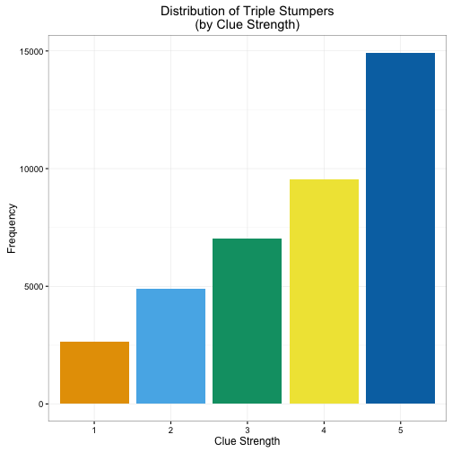
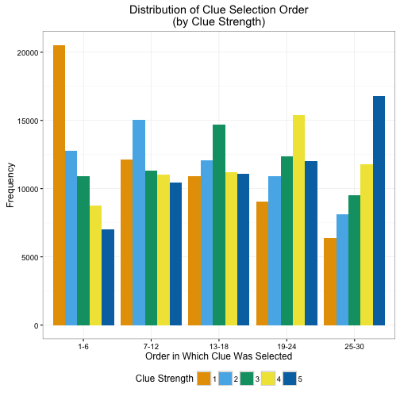
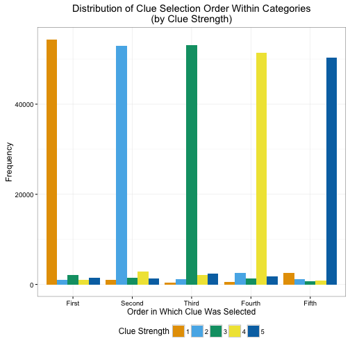
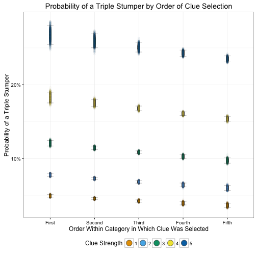

The Forrest Bounce and Its Effect on Triple Stumpers
In the past few weeks, Arthur Chu has plowed through his competition on Jeopardy! to a now complete 11-game winning streak, collecting almost $300,000 in the process. Much has been written on his unique playing style and how polarizing this has become. In short, Chu uses the Forrest Bounce to throw off his opponents and control the board. This has the added benefit of allowing Chu to quickly find the Daily Doubles, increasing his opportunities to amass a large lead and put the game out of reach to his opponents. Of course, this also allows him to deny these same opportunities to his opponents, even if he is not successful. Sometimes he wagers big and gets the question wrong (see his first game), or bets a ridiculously small amount because he is confident he does not know the answer.
Another side effect of this I noticed during his ninth game is that by beginning categories with the higher-dollar answers, rather than the traditional top-down approach, many of these harder clues became triple stumpers. Triple stumpers are clues for which no contestant gives a correct response. It’s not uncommon for this to occur, especially on some esoteric or especially difficult categories. It seemed that Chu’s style of play was generating a lot more triple stumpers than would otherwise be expected, with the contestants allowing all of these high-dollar clues to go to waste, because he was picking more difficult clues within a category before the easier ones. Perhaps if they approached the categories using the traditional method, working one’s way down from the lower-value clues, contestants would get into a rhythm and successfully respond to the higher-value clues as well.
Is this a broader trend? Are higher-dollar clues more likely to be triple stumpers if they are picked earlier on in the round than later? To investigate, I collected data on every clue from Jeopardy and Double Jeopardy rounds in every match from Season 18 to the present. All information comes from J-Archive, a repository of Jeopardy history with detailed player and match statistics, and obtained using the jeopardy-parser.1 I used Season 18 as the cutoff point because the archive does not contain full records of every match from earlier years, plus this was the year Jeopardy doubled the dollar value of all clues in the Jeopardy and Double Jeopardy rounds to their current format. I recorded every single clue’s difficulty level (measured 1-5 based upon its row position, 1 being $200 clues in the Jeopardy round and $400 in the Double Jeopardy round, and 5 being $1000/$2000 from the Jeopardy and Double Jeopardy rounds respectively), the order in which it was selected off the board (ranging from 1-30, with 30 being the maximum number of clues on the board), the order in which it was selected within its own category (1-5), and whether or not is was a triple stumper.

Not surprisingly, triple stumpers occur more frequently as clues become more difficult. The most difficult clues are triple stumpers over 4 times more frequently than the easiest clues. Easy clues are not usually triple stumpers, and when they do occur it can probably be attributed to strange/new categories which are unfamiliar to contestants.

Above is a plot which shows how frequently clues of different strength are selected. Since many contestants will finish a single category from top to bottom before moving onto another category, higher-value clues are still regularly chosen in the earlier stages of the match. However if another contestant rings in with the correct response, frequently they will immediately choose from a different category where they have more confidence, so easier clues are still more frequent than harder clues earlier in a match.

When we examine clue order selection within each category, we see much stronger evidence of a traditional style of play. With very few exceptions, contestants approach categories top-down. This pattern is fully apparent in this next graph which depicts the order in which clues are selected within a specific category. Again, contestants almost always choose the easiest $200/$400 clues first and work their way down the category. Even if a category is interrupted, when contestants return to it they still usually select the easiest remaining clue.
These graphs do not tell us if triple stumpers are more common when the harder clues within a category are chosen before the easier ones. To answer that question, I estimated a simple logistic regression, modeling whether or not a triple stumper occurs as a function of clue strength (scaled 1-5), the order in which the clue was selected within that category (also scaled 1-5), and the interaction of these two factors. I expect that clues selected earlier within a category will have a higher probability of being triple stumpers, while later selections will have a lower probability. This effect will be conditioned by clue strength, as higher-value clues will be more likely to become triple stumpers regardless of within category order selection. I also control for overall clue selection order within each match (scaled 1-30) and each episode in the database (contestant skill varies across episodes, so some matches may naturally have a higher probability for triple stumpers than others).

I simulated clue outcome 1000 times for each combination of selection order and clue strength, plotting the predicted probabilities of a triple stumper with 95% confidence intervals. Overall, the probability of a triple stumper is lower for easier clues and higher for harder clues. The probability of a triple stumper also decreases as more clues within a category are selected, so as contestants warm up to and become more familiar with a category, they are less likely to be stumped.
The Forrest Bounce would seem to increase triple stumpers in a match, as higher-value clues are selected earlier when the probability of a triple stumper is greatest. If contestants choose lower-value clues first, they decrease the probability of being stumped on the higher-value clues within that category. This implies regular use of the Forrest Bounce would cause contestants’ daily winnings to decrease since more dollars are being left on the board. But as Chu has now made widely known, the goal of a Jeopardy contestant is to return the next day and continue competing. Even if a contestant’s single-day totals are lower because of the Forrest Bounce, successful implementation by denying her opponents access to the Daily Doubles allows her to return multiple days and increase her overall winnings, which is always good for the contestant.
Footnotes
This changed from when I originally wrote this post. At first I used an extremely basic parser; much progress has been made on this front, though they still don’t extract as much of the clue detail as I needed to complete this analysis (such as whether or not the clue was a triple stumper).↩︎